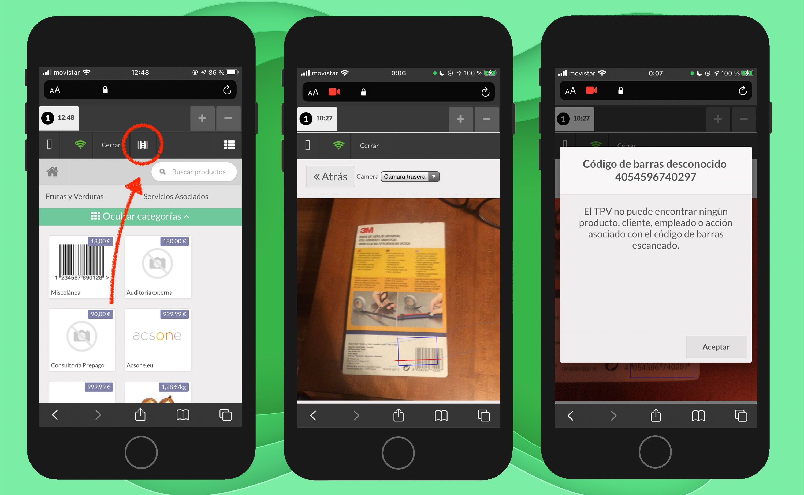
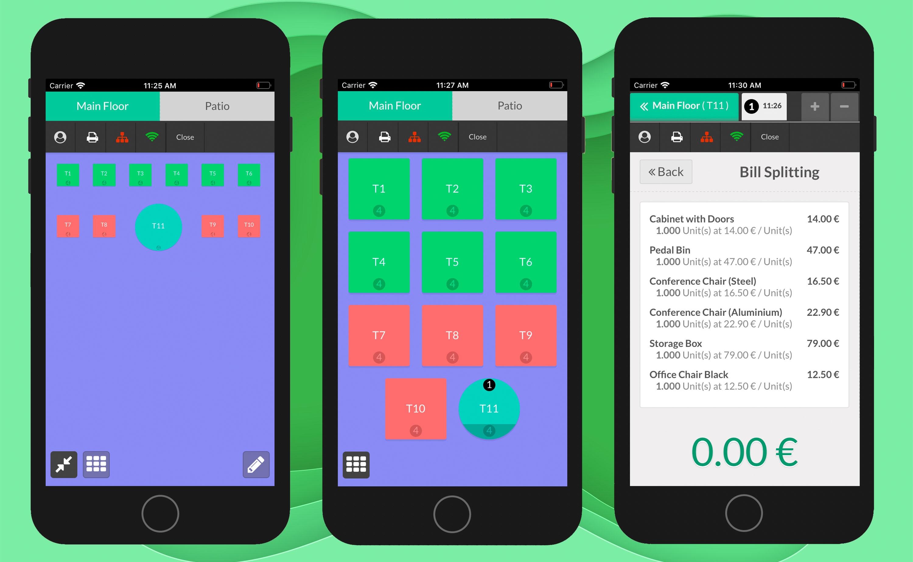

Makes POS UI mobile friedly and resposive for tablet and mobile devices.
The POS UI can be used both in landscape and portrait in mobile devices
Collapsible interface. Allows to reduce visble elements and makes it easy to work in small devices
Add scroll to overflow elements. To make every elemet accesible.
Every feature explained above works perfectly in landscape and helps to improve the experience in this mode.
It will allow you to scan barcode producs and add them to order.
You can use your device camera.
Buy it It will fit your floors plans to screen to see every table confortably in plan mode.
Or it will conver your floor map in a tables grid to quickly select tables.
Buy it If you have any question about the module, need any customization, please feel free to ask us trought email: odoo@stylecre.es
If you have any problem after buying the module, during installation, configuration or using it, do not hesitate to get support via email: odoo@stylecre.es
Would you like to try the module? We can arrenge a test. Send us an email to set a date. odoo@stylecre.es
For more info about us, and our modules, you can visit our web page: https://stylecre.es/odoo
Our modules